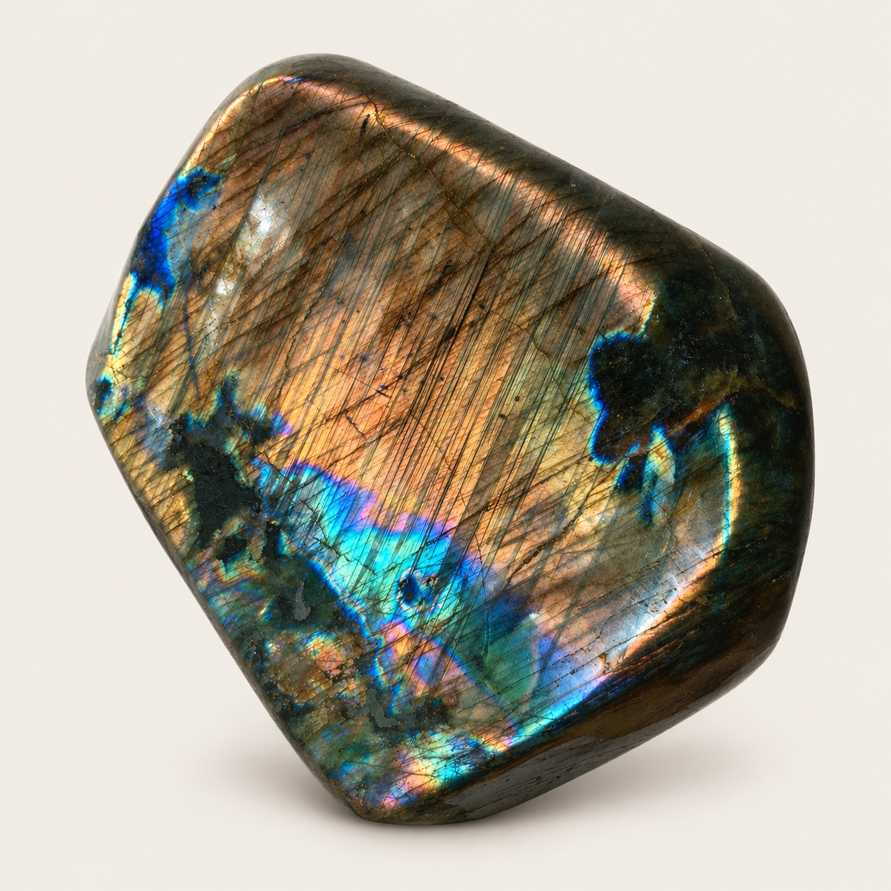

Lavender
amethyst.
Pale lavender quartz with three reported moving bubbles inside. Polished faces reveal the trapped fluid and fine internal structures that make this a favourite in the private collection.
SPECIMEN
Lavender enhydro amethyst
The collection
A selection of sale enquiries and private favourites. Explore the features, formation and finishing of each piece.

The details make
the difference.
Colour that changes with the angle
Labradorite’s flash comes from light interacting with closely spaced layers inside the mineral. Turn the piece and the colour changes. Polishing makes those flashes easier to see across its surface.
A collection
worth exploring.
A UK-based collection of crystals and mineral specimens, with pieces ranging from clear and included quartz to polished labradorite and blue aquamarine. Browse the photographs, read the mineral notes and speak directly to Pair of Queens about the pieces that interest you.
Visit Pair of Queens on InstagramHow do I ask about a piece?
Open its details and choose “Ask about this piece”. You can copy an enquiry and open the Instagram profile to send it. Pair of Queens can confirm the current price, availability, dimensions and shipping options.
Are these current sale listings?
This selection includes archive sale listings and pieces from the owners’ private collection. Private pieces are labelled “Not for sale”. For the others, ask about current availability and prices; this preview is not a live stock list.
How have the photographs been edited?
The studio views use AI-assisted background, hand-removal and lighting edits to illustrate a consistent photographic style. Reconstructed areas may differ from the specimen. Select “Original photo” in any specimen’s details to inspect the source, and request current photographs or video before buying.
Is the green material moss, and how old is the fluid?
The green, moss-like features described in these captions are mineral inclusions such as chlorite. An enhydro contains trapped fluid, with a gas bubble that can move inside it. The age of these particular inclusions has not been established.
Where do the mineral names and notes come from?
Names and any stated origins follow the seller’s captions, without independent testing. General formation notes draw on GIA and Smithsonian references linked within the specimen details. An individual stone’s age, treatment history and precise geological origin need supporting records.
Found a piece you like?
Ask for more photographs, measurements or current availability.